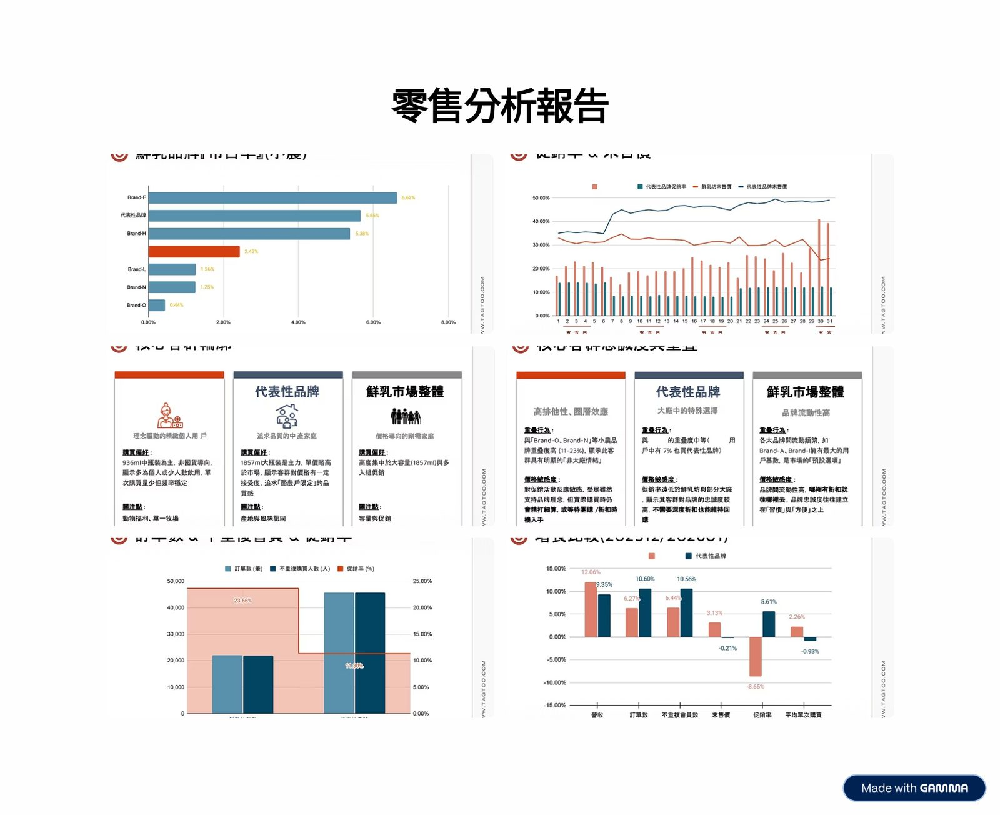
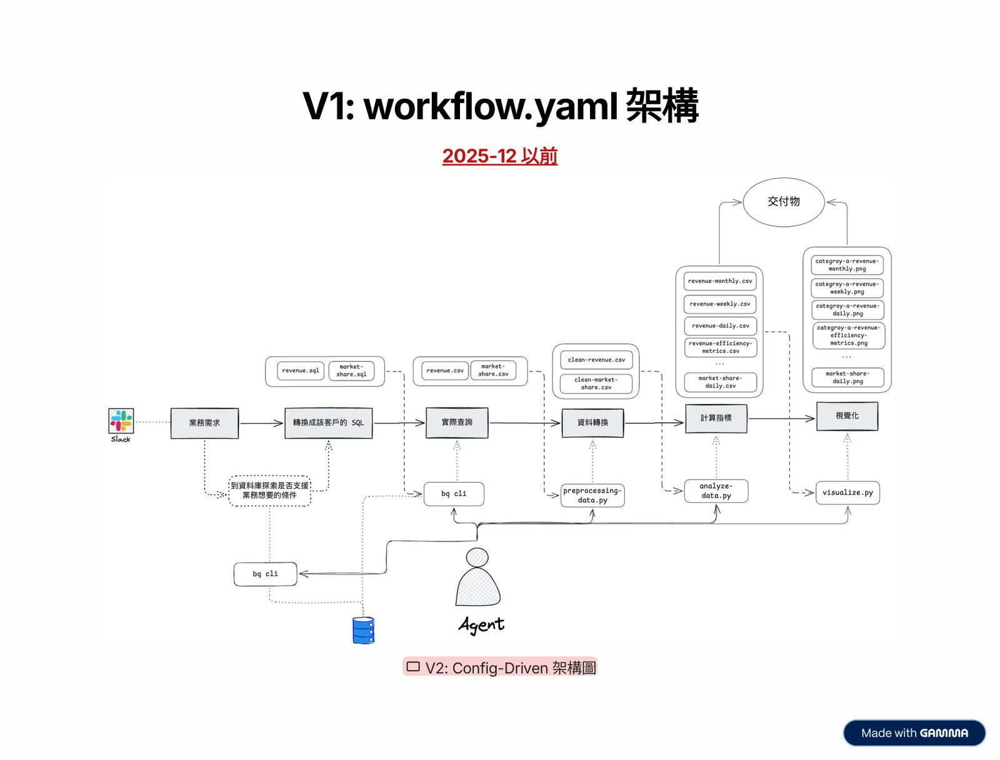
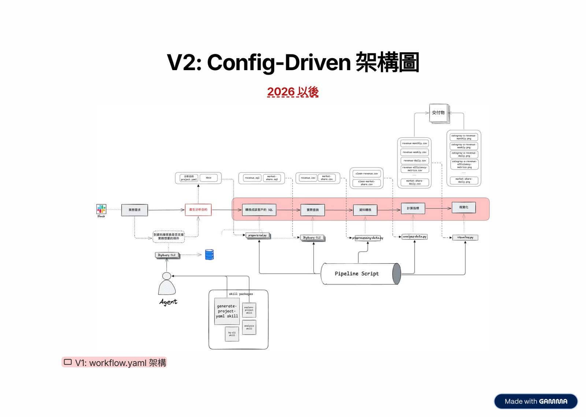
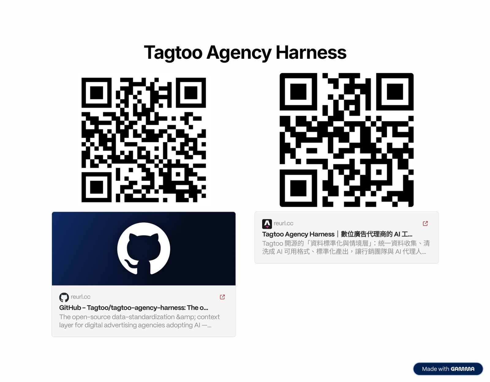

摘要
本講題分享零售數據分析的實戰開發經驗，針對「高度客製化分析需求與規模化系統之間的拉扯」提出 Config-Driven Agentic AI 架構。傳統 V1 架構讓 Agent 作為調度者依據工作流 YAML 直接執行分析，卻面臨速度慢、Token 成本高與上下文腐敗等不穩定問題。為此，Tagtoo 轉向 V2 架構：讓 AI Agent 僅負責與使用者對話並產出結構化的「分析合約（`project.yaml`）」，內含分析單位（Entity）與篩選邊界（Filter），再交由確定性的 Pipeline 腳本執行。系統依需求頻率設計 L1 腳本、L2 說明書與 L3 自訂 SQL 三種路徑，並建立三道防線（需求分類、合約合法性與 dry-run 驗證、結果需求覆蓋率審查），成功以配置化將業務邏輯與自動化分析流程穩定銜接。
重點整理
- 零售分析需求本質上是「比較問題」：業務邏輯 = 分析單位(Entity) + 邊界(Filter)，例如鮮乳需依容量拆分成小、中、大並與競品比較，因此天生就需要高度客製化。
- V1架構讓Agent依照類似SKILL.md的workflow.yaml流程說明書進行調度，優點是調整流程容易、可讀性高，適合探索新流程，但代價是執行速度慢、Token成本高、且容易發生上下文腐敗，導致穩定性差。
- 當分析流程（SQL生成、預處理、指標計算、視覺化交付）出現固定模式時，就是轉向Config-Driven架構(V2)的時機：Agent不再直接執行，而是產生「分析合約」project.yaml，交由固定的pipeline腳本執行，速度與成本都獲得改善。
- 現行以三種執行路徑因應不同成熟度的分析需求：L1高頻穩定的需求用Pipeline Script執行、L2中頻半結構化的需求用Analysis Skills讓Agent照使用說明書執行、L3低頻高客製的需求則讓Agent自由撰寫Custom SQL。
- 透過三道防線提升穩定性：第一道以requirements-classifier skill將業務需求分類為對應的執行路徑；第二道驗證分析合約的合法性、完整性與pipeline dry-run覆蓋度；第三道以requirements-verification skill驗證分析結果是否完整覆蓋原始業務需求。
重點圖片／架構圖




零售分析的挑戰：客製化與規模化的兩難
Tagtoo長期透過數據為零售、電商客戶創造價值，坐擁亞洲最大電商資料庫之一。演講以「鮮乳坊」的實際分析需求為例：客戶想知道品牌、鮮乳、優格、保久乳三個產品線在特定月份的銷售狀況，並與各自的市場、競品比較，其中鮮乳需依容量拆分成小、中、大，保久乳需拆分成原味與調味來分別比較。講者指出，分析需求本質上是一個「比較問題」——你想分析什麼單位、要跟誰比——業務邏輯即等於分析單位加上邊界，唯有把這兩者定義清楚，報告才能回答對的問題，因此這類需求天生需要高度客製化，形成客製化與規模化之間的兩難。
V1：Agent作為調度者的workflow.yaml架構
早期團隊將分析流程中會用到的腳本先建置好，再讓Agent依照workflow.yaml進行調度，流程分為定義目標與範圍、依template產出規劃檔、以及執行探索查詢與資料轉換等步驟。workflow.yaml像是給Agent看的流程說明書（概念上類似SKILL.md），可以描述步驟、依賴、工具與輸入輸出，Agent本身即擔任調度者角色。這套架構的優點是調整流程容易、可讀性高，如同pseudo-code一般易懂，適合探索新流程與實驗性分析項目；但代價是每次執行都須重新解析與推理流程步驟，導致執行速度慢，工具的輸入輸出全部計入Token用量造成成本高，且容易發生上下文腐敗，讓穩定性與信任度下降。
轉折點：從Agent調度轉向Config-Driven架構
團隊發現，當每一種分析項目都出現固定模式——SQL生成與BigQuery查詢、預處理、指標計算、視覺化與交付——這類確定性(deterministic)流程其實不需要Agent反覆協調推理。因此在這個轉折點上，團隊決定將流程從Agent直接執行，轉向以腳本(script)為核心的Config-Driven架構(V2)：Agent不再直接執行一切，而是負責產生一份結構化的「分析合約」，交由固定的pipeline腳本去執行。
分析合約：可被程式碼讀取的業務邏輯
分析合約project.yaml的內容涵蓋客戶與專案資訊、時間範圍、分析類型(P0/P1/P3)、分析單位Entities（如品牌、商品線、競品、市場基準）、篩選條件Filters（如item_id前綴、商品名稱pattern、排除條件）、市場基準(Market baseline)以及視覺化與輸出設定等，皆以結構化YAML格式表示，能被程式碼直接讀取執行。分析合約的產出過程包含確認基本資訊、時間範圍、探索資料庫是否能篩選出所需的分析單位與邊界、設計分析單位並確認市場邊界、決定視覺化分組，最後配置程式碼運行參數。比較V1與V2：V1成本高、速度慢但穩定性高、調整流程容易；V2成本低、速度快，但穩定性相對較低、調整流程較困難。因此團隊進一步依需求頻率與穩定性，區分出三種執行路徑：L1高頻穩定的用Pipeline Script、L2中頻半結構化的用Analysis Skills讓Agent依說明書執行、L3低頻高客製的則讓Agent自由發揮撰寫Custom SQL。
三道防線：讓AI workflow更穩定
為了讓Config-Driven架構在企業場景下穩定運作，團隊建立三道防線：第一道防線是以requirements-classifier skill分類業務需求，產出包含品類、需求摘要、分類執行路徑、前置步驟與複雜度的需求分類報告；第二道防線是驗證分析合約，包括合法性（是否與pipeline腳本相容）、完整性（透過checklist.md確認generate-project-yaml skill每個步驟是否都有產出交付物）、以及pipeline dry-run（檢查分析日期範圍在資料庫中是否完全覆蓋，並預覽查詢成本）；第三道防線則是以requirements-verification skill驗證分析結果，產出需求覆蓋驗證報告，逐一確認指標覆蓋、時間粒度與維度覆蓋是否對應到原始業務需求。團隊最終的結論是：透過AI把業務邏輯設定化，才能讓AI與自動化流程真正穩定地銜接起來。